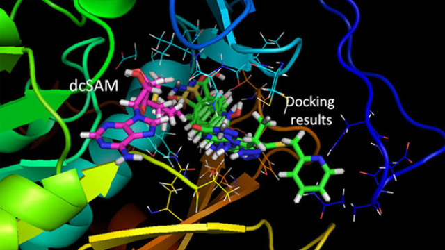

Radiomics/Radiogenomics is a rapidly growing field where complex imaging features are extracted from radiology images to predict clinical outcomes, genetic alterations and other outcomes relevant to a patient's prognosis. This is a non-invasive approach which can provide molecular information unlike a traditional biopsy procedure which is invasive. Most models in radiomics derive numerous texture features from an imaging dataset and then learn complicated, nonlinear hypotheses to solve a given prediction task. However, such approaches present the challenging task of deriving interpretable insights into the data. Visual interpretability is essential for effective adoption of radiomic models into the clinical decision-making process. We have used a technique called dictionary learning to derive visually interpretable radiomic features relevant to genetic alterations in low-grade gliomas.
Computational Drug discovery is one of the most exciting fields in healthcare. Drug discovery is a tedious process. It costs around $2 billion and takes an average of 12 years for a drug to enter the market from its initial development stage. Being able to predict the drug-target interactions accurately will make the drug discovery process cheaper and also reduces the time drugs take to enter the market. We use colloborative filtering techniques to predict drug-target interactions.